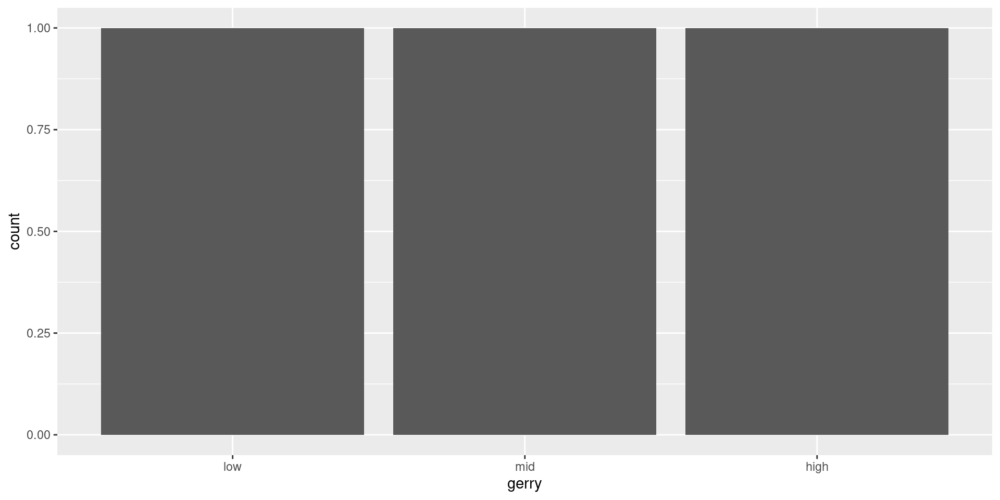

Exploring data II
Lecture 5
Warm-up
While you wait…
Prepare for today’s application exercise: ae-05-gerrymander-explore-II
Go to your
aeproject in RStudio.Make sure all of your changes up to this point are committed and pushed, i.e., there’s nothing left in your Git pane.
Click Pull to get today’s application exercise file: ae-05-gerrymander-explore-II.qmd.
Wait till the you’re prompted to work on the application exercise during class before editing the file.
Reminder: Lab guidelines
Plots should include an informative title, axes and legends should have human-readable labels, and careful consideration should be given to aesthetic choices.
Code should follow the tidyverse style (style.tidyverse.org) Particularly,
- space before and line breaks after each
+when building aggplot - space before and line breaks after each
|>in a data transformation pipeline - code should be properly indented
- spaces around
=signs and spaces after commas
- space before and line breaks after each
All code should be visible in the PDF output, i.e., should not run off the page on the PDF. Long lines that run off the page should be split across multiple lines with line breaks. Tip: Haikus not novellas when writing code!
At least three commits with meaningful commit messages.
Code style and readability
- Whydowecareaboutthestyleandreadabilityofyourcode? \(\rightarrow\) Why do we care about the style and readability of your code?
. . .
- Je voudrais un cafe \(\rightarrow\) Je voudrais un café
gerrymander
Packages
- For the data: usdata
library(usdata)library(tidyverse)── Attaching core tidyverse packages ────────────── tidyverse 2.0.0 ──
✔ dplyr 1.1.4 ✔ readr 2.1.5
✔ forcats 1.0.0 ✔ stringr 1.5.1
✔ ggplot2 3.5.1 ✔ tibble 3.2.1
✔ lubridate 1.9.3 ✔ tidyr 1.3.1
✔ purrr 1.0.2
── Conflicts ──────────────────────────────── tidyverse_conflicts() ──
✖ dplyr::filter() masks stats::filter()
✖ dplyr::lag() masks stats::lag()
ℹ Use the conflicted package (<http://conflicted.r-lib.org/>) to force all conflicts to become errorslibrary(ggthemes)From last time
Is a Congressional District more likely to have high prevalence of gerrymandering if a Democrat was able to flip the seat in the 2018 election? Support your answer with a visualization as well as summary statistics.
group_by(), summarize(), count()
What does group_by() do?
What does group_by() do in the following pipeline?
Let’s simplify!
What does group_by() do in the following pipeline?
group_by()
Group by converts a data frame to a grouped data frame, where subsequent operations are performed once per group
ungroup()removes grouping
group_by() |> summarize()
A common pipeline is group_by() and then summarize() to calculate summary statistics for each group:
gerrymander |>
group_by(state) |>
summarize(
mean_trump16 = mean(trump16),
median_trump16 = median(trump16)
)# A tibble: 50 × 3
state mean_trump16 median_trump16
<chr> <dbl> <dbl>
1 AK 52.8 52.8
2 AL 62.6 64.9
3 AR 60.9 63.0
4 AZ 46.9 47.7
5 CA 31.7 28.4
6 CO 43.6 41.3
7 CT 41.0 40.4
8 DE 41.9 41.9
9 FL 47.9 49.6
10 GA 51.3 56.6
# ℹ 40 more rowsgroup_by() |> summarize()
This pipeline can also be used to count number of observations for each group:
gerrymander |>
group_by(state) |>
summarize(n = n())# A tibble: 50 × 2
state n
<chr> <int>
1 AK 1
2 AL 7
3 AR 4
4 AZ 9
5 CA 53
6 CO 7
7 CT 5
8 DE 1
9 FL 27
10 GA 14
# ℹ 40 more rowssummarize()
... |>
summarize(
name_of_summary_statistic = summary_function(variable)
). . .
name_of_summary_statistic: Anything you want to call it!- Recommendation: Keep it short and evocative
summary_function():n(): number of observationsmean(): meanmedian(): median- …
Spot the difference
What’s the difference between the following two pipelines?
gerrymander |>
group_by(state) |>
summarize(n = n())# A tibble: 50 × 2
state n
<chr> <int>
1 AK 1
2 AL 7
3 AR 4
4 AZ 9
5 CA 53
6 CO 7
7 CT 5
8 DE 1
9 FL 27
10 GA 14
# ℹ 40 more rowsgerrymander |>
count(state)# A tibble: 50 × 2
state n
<chr> <int>
1 AK 1
2 AL 7
3 AR 4
4 AZ 9
5 CA 53
6 CO 7
7 CT 5
8 DE 1
9 FL 27
10 GA 14
# ℹ 40 more rowscount()
... |>
count(variable)... |>
count(variable1, variable2)Count the number of observations in each level of variable(s)
Place the counts in a variable called
n
count() and sort
What does the following pipeline do? Rewrite it with count() instead.
mutate()
Flip the question
Is a Congressional District more likely to have high prevalence of gerrymandering if a Democrat was able to flip the seat in the 2018 election?
vs.
Is a Congressional District more likely to be flipped to a Democratic seat if it has high prevalence of gerrymandering or low prevalence of gerrymandering?
Flipping vs. gerrymandering prevalence
The following code should produce a visualization that answers the question “Is a Congressional District more likely to be flipped to a Democratic seat if it has high prevalence of gerrymandering or low prevalence of gerrymandering?” However, it produces a warning and an unexpected plot. What’s going on?
ggplot(
gerrymander,
aes(x = gerry, fill = flip18)
) +
geom_bar(position = "fill")Warning: The following aesthetics were dropped during statistical
transformation: fill.
ℹ This can happen when ggplot fails to infer the correct grouping
structure in the data.
ℹ Did you forget to specify a `group` aesthetic or to convert a
numerical variable into a factor?
Another glimpse at gerrymander
glimpse(gerrymander)Rows: 435
Columns: 12
$ district <chr> "AK-AL", "AL-01", "AL-02", "AL-03", "AL-04", "AL-…
$ last_name <chr> "Young", "Byrne", "Roby", "Rogers", "Aderholt", "…
$ first_name <chr> "Don", "Bradley", "Martha", "Mike D.", "Rob", "Mo…
$ party16 <chr> "R", "R", "R", "R", "R", "R", "R", "D", "R", "R",…
$ clinton16 <dbl> 37.6, 34.1, 33.0, 32.3, 17.4, 31.3, 26.1, 69.8, 3…
$ trump16 <dbl> 52.8, 63.5, 64.9, 65.3, 80.4, 64.7, 70.8, 28.6, 6…
$ dem16 <dbl> 0, 0, 0, 0, 0, 0, 0, 1, 0, 0, 0, 0, 1, 0, 1, 0, 0…
$ state <chr> "AK", "AL", "AL", "AL", "AL", "AL", "AL", "AL", "…
$ party18 <chr> "R", "R", "R", "R", "R", "R", "R", "D", "R", "R",…
$ dem18 <dbl> 0, 0, 0, 0, 0, 0, 0, 1, 0, 0, 0, 0, 1, 1, 1, 0, 0…
$ flip18 <dbl> 0, 0, 0, 0, 0, 0, 0, 0, 0, 0, 0, 0, 0, 1, 0, 0, 0…
$ gerry <fct> mid, high, high, high, high, high, high, high, mi…mutate()
We want to use
flip18as a categorical variableBut it’s stored as a numeric
So we need to change its type first, before we can use it as a categorical variable
The
mutate()function transforms (mutates) a data frame by creating a new column or updating an existing one
mutate() in action
Revisit the plot
“Is a Congressional District more likely to be flipped to a Democratic seat if it has high prevalence of gerrymandering or low prevalence of gerrymandering?”
Application exercise
ae-05-gerrymander-explore-II
Go to your ae project in RStudio.
If you haven’t yet done so, make sure all of your changes up to this point are committed and pushed, i.e., there’s nothing left in your Git pane.
If you haven’t yet done so, click Pull to get today’s application exercise file: ae-05-gerrymander-explore-II.qmd.
Work through the application exercise in class, and render, commit, and push your edits by the end of class.
Recap: aesthetic mappings
Local aesthetic mappings for a given
geomGlobal aesthetic mappings for all
geoms